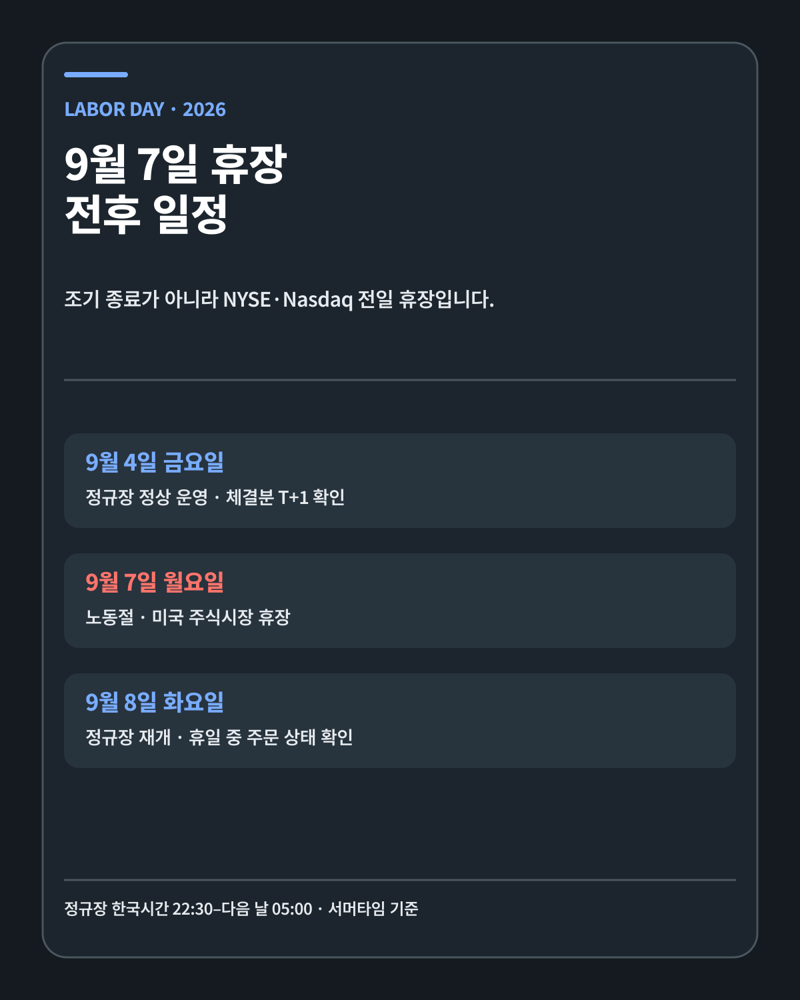
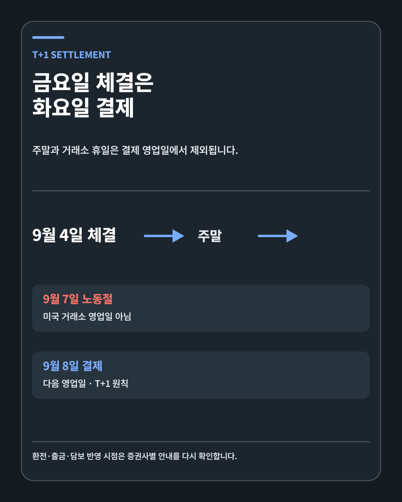
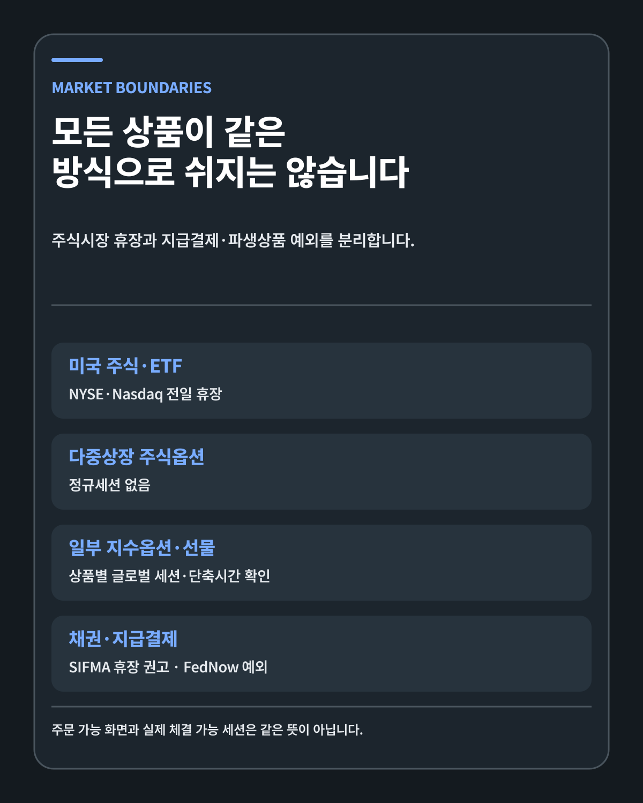
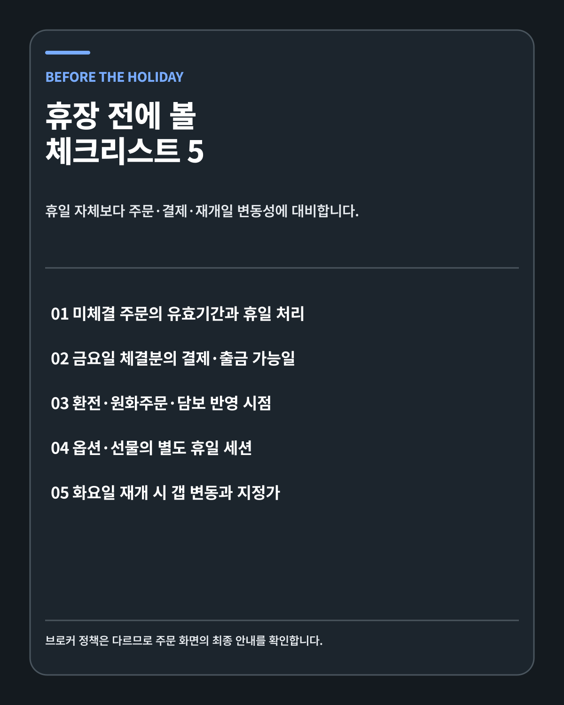

US MARKET · HOLIDAY OPERATIONS
2026 미국 노동절 휴장: 거래·주문·T+1 결제의 경계
9월 7일 미국 주식시장은 전일 휴장합니다. 주문 화면과 실제 체결, T+1 결제와 상품별 예외를 분리해 한국 투자자가 확인할 운영 조건을 정리했습니다.
FIVE-LINE ANSWER
NYSE와 Nasdaq 미국 주식시장은 2026년 9월 7일 월요일 노동절에 전일 휴장합니다. 9월 4일 금요일은 정상 거래일이고 9월 8일 화요일에 정규장이 재개됩니다. 미국 주식 T+1 결제에서 금요일 체결분은 다음 거래소 영업일인 화요일에 결제되는 것이 원칙입니다. 표준 주식·ETF와 다중상장 주식옵션은 휴장하지만 일부 지수옵션·선물, FedNow 같은 지급결제 서비스는 별도 일정이 적용될 수 있습니다. 한국 투자자는 주문 가능 화면과 실제 체결 가능 세션을 구분하고 미체결 주문, 환전·출금과 화요일 갭 변동을 확인해야 합니다.
노동절에 정확히 무엇이 닫히는가
NYSE 공식 달력과 Nasdaq 2026년 휴장 일정은 9월 7일 노동절을 Closed로 표시합니다. 이는 오후 1시 조기 종료가 아니라 거래소 전일 휴장입니다.
NYSE 계열 현물시장과 Nasdaq 미국 주식시장에서 일반 주식·ETF 정규 거래가 열리지 않습니다. 9월 4일 금요일은 정상 운영일이며 9월 8일 화요일에 일반 일정으로 돌아갑니다.
| 날짜 | 시장 상태 | 운영상 의미 |
|---|---|---|
| 9월 4일 금요일 | 정상 거래 | DAY 주문 종료, 체결분 T+1 시작 |
| 9월 5–6일 | 주말 | 거래소 영업일 아님 |
| 9월 7일 월요일 | 노동절 휴장 | 주식·ETF 정규장 없음 |
| 9월 8일 화요일 | 정상 재개 | 금요일 체결분 결제, 휴일 뉴스 반영 |

한국시간으로 본 거래 공백
2026년 9월은 미국 서머타임 기간입니다. 미국 동부 일광절약시간은 UTC-4, 한국시간은 UTC+9이므로 13시간 차이가 납니다.
Nasdaq이 안내하는 정규장 9시30분–오후 4시는 한국시간 밤 10시30분–다음 날 오전 5시입니다. 9월 7일에는 이 정규 거래 구간이 없습니다.
프리마켓과 애프터마켓도 표준 주식 휴장일에는 평일과 같은 방식으로 열리지 않습니다. 증권사 앱이 주문 접수를 허용해도 거래소에 즉시 전달돼 체결된다는 뜻은 아닙니다.
조기 종료일과 전일 휴장의 차이
미국시장은 일부 휴일 전후에 오후 1시 조기 종료를 운영합니다. 추수감사절 다음 날과 크리스마스 이브가 대표적입니다. 조기 종료일에는 오전 정규거래가 존재하고 결제 영업일로 취급됩니다.
노동절은 다릅니다. NYSE와 Nasdaq 달력에서 시장 상태가 Closed입니다. 정규세션 전체가 없고, 금요일에서 화요일로 거래 영업일이 넘어갑니다.
휴일 일정을 단순히 장이 일찍 끝난다고 기억하면 주문 종료시간과 결제일을 잘못 계산할 수 있습니다.
T+1 결제는 왜 화요일인가
SEC T+1 안내에 따르면 대부분의 미국 브로커-딜러 증권거래는 거래일 다음 한 영업일에 결제됩니다.
금요일 9월 4일에 주식을 매수하거나 매도했다고 가정하겠습니다. 토요일과 일요일은 거래소 영업일이 아닙니다. 월요일 9월 7일도 NYSE·Nasdaq 휴장일입니다. 다음 영업일은 화요일 9월 8일이므로 T+1 결제일은 화요일입니다.
결제는 매수자에게 증권이, 매도자에게 현금이 최종적으로 이전되는 절차입니다. 체결과 결제는 같은 사건이 아닙니다. 금요일에 거래가 체결됐어도 출금 가능금액과 담보 반영은 결제 완료 시점에 영향을 받을 수 있습니다.

매수·매도 주문의 상태
휴일 중 증권사 앱에서 주문 버튼이 보이거나 예약주문을 입력할 수 있습니다. 화면에서 주문을 받아 보관하는 기능과 미국 거래소가 체결 세션을 운영하는 것은 다릅니다.
DAY 주문은 일반적으로 해당 거래일에만 유효합니다. 금요일에 미체결된 DAY 주문이 노동절까지 자동 연장된다고 가정하지 않습니다.
GTC 주문은 더 오래 유지될 수 있지만 기업행사, 가격 제한, 세션 자격과 증권사 정책에 따라 취소·조정될 수 있습니다. 유효기간과 주문 상태를 직접 확인합니다.
예약주문은 다음 거래 가능 세션으로 전달될 수 있습니다. 접수완료는 체결완료가 아닙니다. 주문 상세에서 거래소 전송 예정시각과 지정가를 확인해야 합니다.
시장가 주문의 재개일 위험
미국 현물시장이 닫혀도 다른 국가의 주식시장, 외환, 원자재와 일부 선물은 움직입니다. 기업 공시와 지정학 뉴스도 계속 나옵니다.
화요일 개장가는 금요일 종가와 다를 수 있습니다. 휴일 동안 정보가 쌓이면 매수·매도 주문이 개장 경매에 몰려 갭이 커질 수 있습니다.
시장가 주문은 체결 가능성을 우선하지만 가격을 보장하지 않습니다. 휴장 다음 날 변동성이 커질 수 있는 상황에서는 지정가와 주문수량이 계획에 맞는지 다시 확인합니다.

옵션과 선물의 예외
Cboe 휴일 세션 안내를 보면 월요일 휴일에 정규거래 RTH와 Curb 세션은 없습니다. 다중상장 주식옵션은 표준 휴일 세션에서 거래되지 않습니다.
일부 적격 지수옵션은 글로벌 거래시간 GTH가 휴일 전후에 별도로 운영될 수 있습니다. 지수선물과 변동성 선물도 거래소·상품별 휴일시간이 다릅니다.
따라서 미국 주식 휴장을 모든 파생상품이 24시간 완전히 멈춘다는 뜻으로 넓히지 않습니다. 상품 코드와 거래소의 당해 연도 공지에서 세션을 확인합니다.
채권시장은 권고 일정입니다
SIFMA 노동절 공지는 9월 7일 미국 달러 표시 채권시장에 전일 휴장을 권고합니다.
적용 범위에는 미국 국채, 주택저당증권, 투자등급·하이일드 회사채, 지방채와 일부 단기금융상품이 포함됩니다. 다만 SIFMA 일정은 회원사에 대한 권고이며 각 회사가 최종 운영을 결정할 수 있습니다.
주식 거래소의 공식 휴장과 채권시장의 업계 권고를 같은 법적 성격으로 설명하지 않아야 합니다.
연준 금융서비스와 FedNow
Federal Reserve Financial Services 휴일 일정은 노동절에 대부분의 연준 금융서비스가 닫힌다고 안내합니다. FedACH 처리도 휴일 전후 별도시간을 적용합니다.
FedNow는 연준 휴일에도 24시간 운영되는 예외입니다. 은행 휴일이라는 이유로 미국의 모든 지급결제가 중단된다고 말할 수 없습니다.
증권 결제, ACH, 실시간 지급결제는 서로 다른 인프라입니다. 주식 거래소 휴장과 은행 서비스의 중단 여부를 각각 확인합니다.
환전·원화주문·출금
국내 증권사의 환전과 원화주문 서비스는 미국 거래소 달력과 완전히 같지 않습니다. 국내 영업시간, 제휴 외환시장, 자동환전과 증거금 정책이 별도로 적용됩니다.
휴일에도 환전 신청이 가능할 수 있지만 적용 환율과 실제 처리시점은 다를 수 있습니다. 금요일 매도대금을 바로 출금하려는 경우 T+1 결제와 증권사 출금 반영시간을 확인합니다.
담보와 미수 가능금액도 체결·결제·환율 평가에 따라 달라집니다. 브로커 앱의 최종 안내를 우선합니다.
재개일 가격 형성
화요일 개장 전에는 휴일 동안의 기업 공시, 원자재 가격, 외환, 해외시장과 지수선물을 확인합니다. 이 지표가 미국 주식 개장가를 정확히 예측해 주는 것은 아니지만 정보가 어느 방향으로 쌓였는지 보여 줍니다.
개장 직후 유동성이 안정되기 전에는 스프레드가 넓거나 가격이 빠르게 움직일 수 있습니다. 장기투자자라도 계획 없는 시장가 주문은 피할 수 있습니다.
휴장 이후 주가가 갭 상승하거나 하락해도 기업의 기술·해자·성장률·현금흐름이 변했는지를 따로 봅니다. 운영 일정과 투자 논리를 섞지 않습니다.
실제 일정으로 보는 금요일 매도 사례
가령 9월 4일 금요일 정규장에서 미국 주식을 매도했다고 가정합니다. 주문이 체결된 순간과 매도대금이 결제된 순간은 다릅니다. 미국 주식의 표준 결제주기는 T+1이지만 여기서 +1은 달력의 다음 날이 아니라 미국 증권시장의 다음 영업일을 뜻합니다.
9월 5일과 6일은 주말이고 7일은 노동절입니다. 따라서 다음 영업일은 9월 8일 화요일입니다. 매도 체결내역에 금액이 보이더라도 결제 전 자금의 출금·환전·담보 사용 가능 여부는 증권사 규칙에 따라 달라질 수 있습니다. 세금이나 생활비처럼 사용일이 정해진 자금은 거래일만 세지 말고 결제일과 국내 출금 반영시간까지 역산해야 합니다.
반대로 금요일에 매수했다면 화요일 결제에 필요한 원화·달러 예수금이 충분한지 봅니다. 주말 동안 환율이 움직였을 때 원화주문의 자동환전 금액이 바뀔 가능성도 있습니다. 주가만 보고 주문한 뒤 결제자금을 월요일에 준비하려는 계획은 휴장일 때문에 어긋날 수 있습니다.
예약주문 사례와 지정가 원칙
9월 7일 밤 증권사 앱에서 예약매수를 넣었다고 가정합니다. 주문이 접수됐다는 알림은 국내 증권사 시스템이 주문 의사를 저장했다는 의미일 수 있습니다. 실제 미국시장 전송과 체결은 화요일 거래세션이 열려야 가능합니다.
휴일 동안 기업 공시나 거시경제 뉴스가 나왔다면 화요일 예상 체결가는 금요일 종가와 벌어질 수 있습니다. 금요일 종가가 100달러였다는 이유로 시장가 예약주문이 100달러 부근에서 체결된다고 볼 수 없습니다. 시장가 주문은 가격보다 체결을 우선합니다.
저는 예약주문을 사용할 때 주문유형, 유효기간, 거래소 전송 예정일과 지정가를 한 화면에서 다시 확인합니다. 앱이 정확한 전송 예정시각을 보여 주지 않는다면 해당 증권사의 해외주식 공지나 고객센터 안내를 우선합니다. 일정표는 공통이지만 예약주문 구현은 증권사마다 다릅니다.
거래 달력과 결제 달력을 따로 관리하는 이유
장기투자자도 거래 달력 하나만으로는 부족합니다. 첫 번째 달력에는 NYSE·Nasdaq 휴장과 조기 종료를 기록합니다. 두 번째에는 보유 종목의 실적 발표, 주주총회, 배당락과 주요 경제지표를 기록합니다. 세 번째에는 큰 매도·환전·출금의 결제 예정일을 적습니다.
세 달력을 분리하면 시장이 열리는가, 가격을 바꿀 정보가 나오는가, 현금을 실제로 쓸 수 있는가라는 서로 다른 질문에 답할 수 있습니다. 노동절은 첫 번째와 세 번째 달력에 직접 영향을 줍니다. 실적 발표나 기업 공시는 휴장과 관계없이 나올 수 있으므로 두 번째 달력은 계속 움직입니다.
월급날 정기매수를 하는 경우에도 같은 원칙이 유용합니다. 월급이 들어온 날이 미국 휴장일이라면 주문은 다음 세션으로 넘어갈 수 있습니다. 정기매수 원칙을 바꿀 필요는 없지만 체결일, 환율과 평균단가는 원래 예상과 달라질 수 있습니다. 이 차이를 전략 실패로 보지 않고 일정 차이로 기록합니다.
자동매매·알림 시스템에서 확인할 항목
API나 자동화 도구를 쓴다면 휴일을 단순히 토요일·일요일로만 판정하면 안 됩니다. 거래소 공식 휴장 달력, 조기 종료, 서머타임과 세션별 운영시간이 모두 입력돼야 합니다. 현물주식과 옵션·선물을 같은 세션 코드로 처리하는 것도 위험합니다.
자동화가 주문을 만들더라도 브로커 응답의 접수, 거절, 예약, 체결 상태를 구분해 저장해야 합니다. 휴장일에 성공 응답을 받았다는 이유로 체결됐다고 기록하면 보유수량과 현금원장이 어긋날 수 있습니다. 체결내역을 최종 기록으로 삼고 주문번호만 있는 상태는 별도 대기열로 남기는 편이 안전합니다.
알림도 두 단계로 나누는 것이 좋습니다. 휴장 전에는 미체결 주문과 결제예정 금액을 알려 주고, 재개일에는 예약주문의 실제 전송·체결 여부를 확인합니다. 이 글의 목적은 자동매매 전략을 만드는 것이 아니라 달력 오류로 생길 수 있는 운영 실수를 줄이는 데 있습니다.
노동절 이후에 봐야 할 세 가지 장면
첫째는 화요일 프리마켓의 거래량과 스프레드입니다. 휴일 동안 쌓인 주문이 어느 방향으로 몰리는지 보여 줄 수 있지만 정규장 방향을 보장하지는 않습니다.
둘째는 개장 뒤 첫 30분의 가격 안정입니다. 갭이 크게 벌어져도 유동성이 돌아오면서 일부 되돌림이 나타날 수 있고, 반대로 새 정보가 강하면 갭이 유지될 수 있습니다. 미리 정한 지정가와 분할 기준 없이 반응하지 않습니다.
셋째는 보유기업 자체의 공시입니다. 지수선물과 환율이 움직였다는 이유만으로 기업의 기술력이나 장기 현금흐름이 바뀐 것은 아닙니다. 시장 일정에서 생긴 단기 변동과 투자 가설의 훼손을 분리해야 합니다.

휴장 전 체크리스트
- 금요일 DAY·GTC 미체결 주문 상태
- 금요일 체결분의 화요일 결제와 출금 가능일
- 환전·원화주문·담보 반영시간
- 옵션·선물·채권의 상품별 휴일 세션
- 화요일 개장 전 공시·환율·선물과 지정가
제 판단
휴장일은 시장 방향을 맞히는 재료가 아니라 거래와 결제의 운영 경계입니다. 저는 9월 7일에 미국 주식 주문이 즉시 체결되지 않는다는 사실, 금요일 체결분 결제가 화요일로 넘어간다는 점을 먼저 기록합니다.
장기투자자는 매일 거래하지 않아도 됩니다. 오히려 휴장 전후에 주문을 서두르지 않고 보유기업의 펀더멘털을 다시 확인할 시간을 가질 수 있습니다.
이 글은 미국시장 일정과 결제구조를 공부하기 위한 개인 투자 리서치입니다. 특정 금융상품이나 종목의 매수·매도를 권유하지 않습니다.
작성 방법
이 글은 2026년 9월 1일 기준 NYSE·Nasdaq·SEC·Cboe·연준·SIFMA 자료를 교차 확인했습니다. 확인된 사실, 회사 전망과 개인 시나리오를 분리했습니다.
개인 투자 기록이며 특정 종목이나 금융상품의 매수·매도를 권유하지 않습니다. 투자 판단과 손익의 책임은 투자자 본인에게 있습니다.